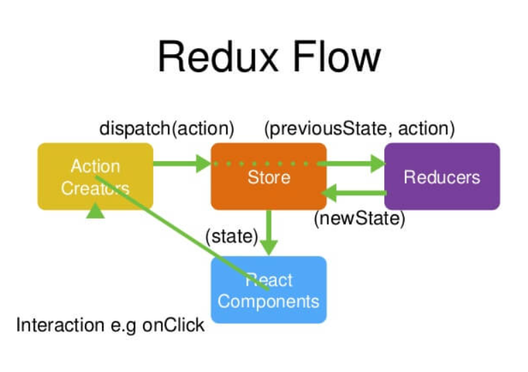
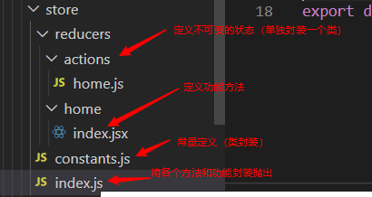

介绍
为什么使用？
更好的对状态进行追踪和控制，使状态突变变得可预测的。
三大原则
- 单一数据源
- State是只读的
- 使用纯函数来执行修改
（1）Web 应用是一个状态机，视图与状态是一一对应的。
（2）所有的状态，保存在一个对象里面。
Store 就是保存数据的地方，你可以把它看成一个容器。整个应用只能有一个 Store。

使用流程
import { createStore,combineReducers } from 'redux';
//combineReducers：将方法合并成一个集合
// combineReducers 集合
const rootReducer = combineReducers({//返回一个集合
login: loginReducer,//loginReducer为function
posts: postsReducer//postsReducer为function
})
//createStore :创建Store的
let store = createStore(rootReducer, window.STATE_FROM_SERVER)
//window.STATE_FROM_SERVER`就是整个应用的状态初始值。注意，如果提供了这个参数，它会覆盖 Reducer 函数的默认初始值。
const store = createStore(
rootReducer,
window.__REDUX_DEVTOOLS_EXTENSION__ && window.__REDUX_DEVTOOLS_EXTENSION__()
);
// window.__REDUX_DEVTOOLS_EXTENSION__ && window.__REDUX_DEVTOOLS_EXTENSION__() 使用谷歌浏览器的ruduce 的管理器createStore
createStore方法还可以接受第二个参数，表示 State 的最初状态。这通常是服务器给出的。
window.STATE_FROM_SERVER就是整个应用的状态初始值。注意，如果提供了这个参数，它会覆盖 Reducer 函数的默认初始值。
//使用方法
let store=createStore(reducer, [preloadedState], enhancer) 参数
reducer(Function): 接收两个参数，分别是当前的 state 树和要处理的 action，返回新的 state 树。preloadedState] (any): 初始时的 state。 在同构应用中，你可以决定是否把服务端传来的 state 水合（hydrate）后传给它，或者从之前保存的用户会话中恢复一个传给它。如果你使用 [combineReducers创建reducer，它必须是一个普通对象，与传入的 keys 保持同样的结构。否则，你可以自由传入任何reducer可理解的内容。enhancer(Function): Store enhancer 是一个组合 store creator 的高阶函数，返回一个新的强化过的 store creator。这与 middleware 相似，它也允许你通过复合函数改变 store 接口。
返回值
(Store): 保存了应用所有 state 的对象。改变 state 的惟一方法是 dispatch action。你也可以 subscribe 监听 state 的变化，然后更新 UI。
Store 方法
combineReducers
combineReducers()做的就是产生一个整体的 Reducer 函数。该函数根据 State 的 key 去执行相应的子 Reducer，并将返回结果合并成一个大的 State 对象。
bindActionCreators
参数：actionCreators(函数或者对象)
dispatch:一个对仓库可以调度函数。
getState
获取Reducer返回的状态(state)
dispatch
store.dispatch(loginAction);过程：
- 首先，用户发出 Action。
- 然后，Store 自动调用 Reducer，并且传入两个参数：之前传过来的 State（第一次调用则是为null） 和收到的 Action。 Reducer 会返回新的 State 。
- 其中所有函数都会执行到
subscribe（订阅）
该函数如同监听函数
订阅Store ，store 通知我回调
Store 一旦有变化，Store 就会调用监听函数（subscribe）。
//这一步有返回值 返回一个函数。
const unsubscribe=store.subscribe(() => {//这步一般在组件加载完成的时候触发componentDidMount（）
//这里可以做重新渲染组件
render();
})
/**取消订阅*/
//取消只需要调用放回值
componentWillUnMount
unsubscribe();//这一步一般在组件卸载的时候被触发
react-redux(使用规则)
react 中手动实现connect
useState
useState返回状态（返回为useState中的参数） 会存在state
//整个context 的状态模拟
const [ state, setTheme ] = useState({ theme: 'red' });在react中使用createContext去获取全局的上下文const context = createContext();
在上下文中有实现Provider，
import React, { Fragment, useState, createContext } from 'react';
const context = createContext()
const { Provider, Consumer } = context;
<Provider value={{
state,
setTheme
}}>
<Fragment>
<Header theme={state.theme}/>
<Footer />
</Fragment>
</Provider>
//Provider将数据存在value属性值中 （唯一存储方法）存储方法：
- Provider将数据存在value属性值中 （唯一存储方法）
- Consumer在这个组件中取出Provider存的数据，在Provider内部使用Consumer才是合法的，才能提取数据
react-dedux 封装Consumer==>（connect）
import { Provider, connect } from 'react-redux';
//Header组件
function Header(props) {
//函数使用形参传递props
// 类 class 使用这个this.props
// FC
console.log(1111, props);
return (
<div>
Header
{/* <Login theme={theme}/> */
// console.log(object);
}
<Login />
{ props.login ? '1' : '0'}
<button onClick={() => { props.changeLoginStatus() }}>
btn
</button>
{/* Login 还有其他组件 <Avatar theme={theme}> */}
</div>
)
}
// 获取全局 store 上面的数据，可以 Consumer 来获取
// store 里面的全部的数据都是全局，Header 只要 header 相关的数
// state = { login: true, posts: [] }
// 从 全部的 store 过滤一下
// Consumer 来，让我们 用 connect
// 取到
function mapState(state) {
// 把你想要的数据 return 出来 传递到props上
return {
login: state.login
}
}
// toProps
// 修改数据
function mapDispatch(dispatch) {
return {
changeLoginStatus() {
dispatch(loginAction)
}
}
}
//不在使用Consumer取数据了，react-redux 封装了Consumer向外抛出connect方法取数据
// mapState 把需要的数据映射到props上
//mapDispatch将需要使用到的方法映射到props上
//所有的数据都映射到了Header 的props上
const ConnectedHeader = connect(mapState, mapDispatch)(Header)
// Header组件 经过connect函数改造成了 ConnectedHeader组件
//使用就ConnectedHeader代替Header使用react-redux中Provider
自己不传入context会基于React.createContext()实现
状态管理器（redux）使用实例
状态的定义

import { Provider } from 'react-redux';
//引入 封装好的功能方法
import store from './store/index';
<Provider store={store}>
//在Provider中的所有子组件都可以通过Props使用store中的方法
//并且在Props会继承对状态操作的三个方法
//getState ， dispatch ， subscribe
//可以通过这个些方法操作状态（store）
<BrowserRouter>
<Header/>
<Switch>
<Route path="/home" component={Home} exact/>
<Route path="/detail" component={Detail} />
{/* </Header> */}
</Switch>
</BrowserRouter>
</Provider>组件连接store(仓库)connect
连接仓库一种方法
export default connect(function mapStateTopRops(state){
//返回仓库内容
return state;
},function mapDispatchToProps(dispatch){
return {dispatch}
})(App);mapStateTopRops
将仓库中的状态取出，返回给这个App组件，是组件不用导入仓库就能使状态（mapStateTopRops已经导入了仓库并且将状态以参数的形式返回个这个组件（props中））
mapDispatchToProps
将对仓库（store）可操作（修改等）的功能（dispatch）返回给这个组件（以props属性值返回）中。